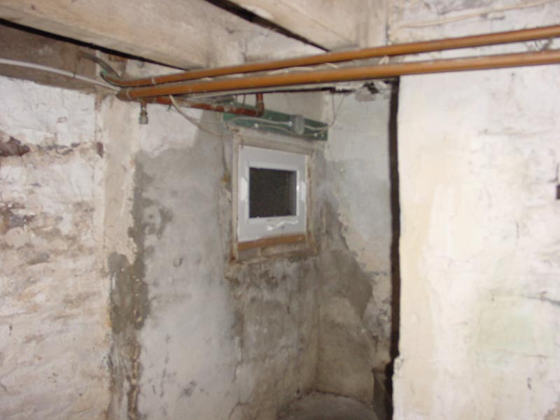

|  |
|
When turning around, remember to duck under those pipes and beams as you look to negotiate yoour footing on the wobbly steps. This is especially fun when carrying a basket of laundry. You can also take the time to observe the interesting construction of the wobbly steps. |